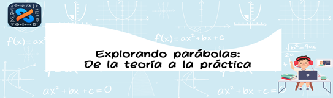

AVA
UNIDAD DE APRENDIZAJE 1
Introducción la unidad
Bienvenidos a la unidad de Funciones Cuadráticas. En esta sección del curso, exploraremos uno de los conceptos fundamentales en el estudio de las matemáticas. A lo largo de esta unidad, nos sumergiremos en el fascinante mundo de las ecuaciones cuadráticas, comprendiendo su importancia en numerosos campos de aplicación, desde la física hasta la economía.
Contenidos / Temáticas
● Lectura y comprensión de las características de las funciones cuadráticas.
● Resolución de problemas que involucren la identificación de vértices, interceptos y gráficas de funciones cuadráticas.
● Participación en discusiones en línea sobre aplicaciones de las funciones cuadráticas en la vida cotidiana y en ciencias.
Aprendizajes esperados
- Demostrar comprensión de las características y propiedades de las funciones cuadráticas.
- Aplicar el conocimiento adquirido en la resolución de problemas variados.
Obra publicada con Licencia Creative Commons Reconocimiento Compartir igual 4.0